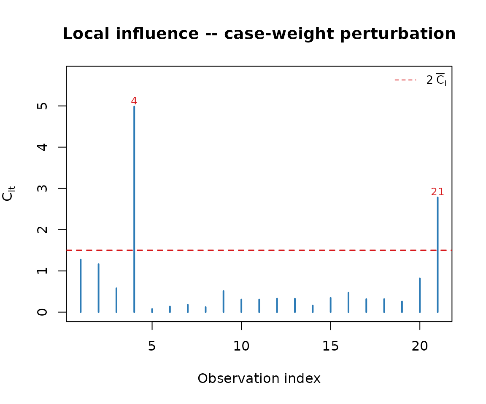
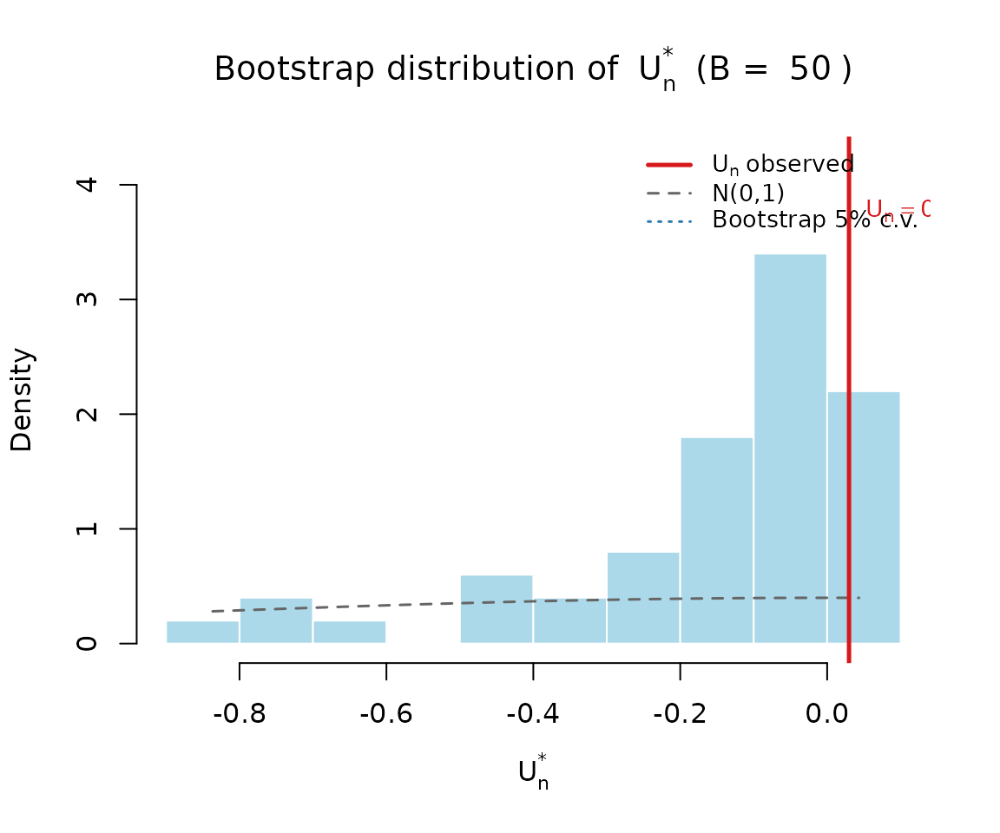

Overview
simplexgof implements a bootstrap-calibrated local-influence goodness-of-fit (GoF) test for simplex regression models with constant or varying dispersion. The package provides:
-
simplex_fit(): fit a simplex regression model via maximum likelihood, with logit link for the mean and log link for the dispersion. -
simplex_diag(): compute local-influence diagnostic quantities (the and statistics, individual influence measures ). -
simplex_gof(): run the full parametric-bootstrap GoF test. - Plotting functions to visualise influence diagnostics, half-normal envelopes, and the bootstrap distribution of .
This vignette walks through a complete analysis using the
ammonia dataset bundled with the package.
The data
The ammonia dataset (Brownlee, 1965) has 21 observations
on the proportion of ammonia lost during an industrial oxidation
process, together with three covariates.
data(ammonia)
head(ammonia)
#> perda corr_ar temp_agua conc_acido
#> 1 0.042 80 27 89
#> 2 0.037 80 27 88
#> 3 0.037 75 25 90
#> 4 0.028 62 24 87
#> 5 0.018 62 22 87
#> 6 0.018 62 23 87The response perda is a proportion in
,
making it a natural candidate for simplex regression.
Fitting a simplex regression model
We model the mean
with covariates corr_ar, temp_agua, and their
interaction, and allow the dispersion
to depend on temp_agua and the same interaction term.
X <- cbind(1, ammonia$corr_ar, ammonia$temp_agua,
ammonia$corr_ar * ammonia$temp_agua)
Z <- cbind(1, ammonia$temp_agua,
ammonia$corr_ar * ammonia$temp_agua)
fit <- simplex_fit(ammonia$perda, X, Z)
fit
#>
#> Simplex Regression (n = 21 ; p = 4 ; q = 3 )
#>
#> Estimate Std.Error z.value Pr
#> beta1 -12.9893 2.1038 -6.1742 < 0.001
#> beta2 0.1312 0.0363 3.6140 < 0.001
#> beta3 0.2705 0.1024 2.6408 0.00827
#> beta4 -0.0037 0.0017 -2.1473 0.03177
#> gamma1 3.8342 3.3908 1.1308 0.25815
#> gamma2 -0.4454 0.2882 -1.5456 0.12219
#> gamma3 0.0044 0.0024 1.8791 0.06024
#>
#> Log-likelihood: 100.4159 | converged: TRUEThe fitted object has class "simplexfit", with
print, coef, and fitted
methods.
coef(fit)
#> beta1 beta2 beta3 beta4 gamma1
#> -12.989277092 0.131221084 0.270456443 -0.003688490 3.834204659
#> gamma2 gamma3
#> -0.445382851 0.004442287Influence diagnostics
simplex_diag() computes the case-weight local-influence
measures
and the test statistics
and
that aggregate them.
dg <- simplex_diag(fit)
dg$Tn
#> [1] 8.044735
dg$Un
#> [1] 0.02977546These quantities can be visualised with
plot_influence(), which produces an index plot of the
individual influence values
:
plot_influence(dg)
The bootstrap goodness-of-fit test
Because the first-order asymptotic normal calibration of
is known to be liberal in small samples, simplex_gof()
provides a parametric bootstrap calibration. With B = 50
replicates (for speed in this vignette; use a larger B,
e.g. 1000, in practice):
set.seed(42)
gof <- simplex_gof(ammonia$perda, X, Z, B = 50, alpha = 0.01,
verbose = FALSE)
gof
#> simplexgof: U_n = 0.0298 (Tn = 8.0447, B = 50)
#>
#> alpha boot_lo boot_hi decision_boot norm_lo norm_hi decision_norm
#> 1% -0.8248 0.0424 Do not reject H0 -2.5758 2.5758 Do not reject H0The bootstrap distribution of
under
can be visualised with plot_gof_boot():
plot_gof_boot(gof)
Half-normal plot with simulated envelope
plot_envelope() produces a half-normal plot of the
influence measures with a simulated envelope, useful for spotting
individual observations that drive the lack of fit:
plot_envelope(fit, B = 99)Convenience plot methods
Both "simplexfit" and "simplexgof" objects
have plot() methods that wrap the functions above: